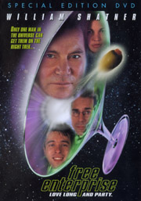

Contents | Features | Reviews | News | Archives | Store

Contents | Features | Reviews | News | Archives | Store
Free Enterprise
Review by
Sean Axmaker
Posted 5 November 1999
|  |
Directed
by Robert Meyer Burnett Starring
Rafer
Weigel, Written
by Mark A. Altman |
Write
about what you know. So goes the advice for young writers and filmmaking
hopefuls. Unfortunately, for a generation of middle class kids with remarkably
similar backgrounds, that’s led to an overabundance of two distinctive strands
of contemporary indie cinema. The most familiar is the genre-bending, blood and
guts the children of Quentin Tarentino, the post-post film school generation of
video hounds who go beyond quoting older films to recycling films and genres
with equal parts Mixmaster-and match reworking, narrative noodling, and hip,
ironic distance. Less prevalent but equally distinctive are the stories of
underachieving college educated adults wistfully looking back on their
adolescent innocence. Rife with guys sitting around chawing over pop culture
detritus while studiously avoiding making any -- ANY -- life changes that might
lead to greater responsibility and less free time, this uniquely 1990s genre has
given us a few minor gems (Reality Bites,
Swingers) but for most part tells us
more about their creators than we really care to know.
So
you have to hand it to Robert Meyer Burnett and Mark A. Altman, the director and
writer, respectively, of Free Enterprise.
They don’t expand the genre in any appreciable way, but they shamelessly
remove the cover of “universality” of most of these films (working in malls,
quoting sitcoms and pop music) to explore the lives of movie and media saturated
SF geeks with dreams of making it in Hollywood via cheap horror films and
self-referential movies. This is about them: part wistful remembrance, part
critical pop-psychology, and part wish fulfillment fantasy.
It’s
this fantasy, specifically, that has attracted the most attention to this much
talked about but little seen indie picture. A pair of flashbacks introduce our
geek heroes early on in their fanboy development. Gawky Robert plots to get into
the opening day show of Star Trek: The
Motion Picture when a vision of William Shatner’s Captain Kirk appears to
offer advice. “I’m one of the top ten imaginary friends for kids your
age,” he explains to the dumbfounded devotee. Diminutive Mark, wearing a
“Star Trek” crew jersey to school, scraps with a much larger bully and
receives sage wisdom from Kirk… who immediately retracts it in pure
testosterone-laden Kirk fashion when his vanity is wounded by the “Star
Wars” loving bully.
Years
later these guys are on the edge of thirty, still embracing a lifestyle of
movies and memorabilia, adding only late night drinking and electronic toys to
the mix. Robert (Rafer Weigel) is a film editor and aspiring filmmaker with Full
Eclipse, a straight to video company with a more than passing resemblance to
Full Moon (one of many, many, many
insider jokes), and Mark (Liev Schriever look-alike Eric McCormack) is the
workaholic editor of GEEK magazine. Their lives reach a wet dream apex when they
run into William Shatner at a bookstore (he’s furtively checking out the porno
magazines) and take him out for drinks as they feign interest in his dream
project: a full length musical version of Shakespeare’s Julius
Caeser. “I play Caesar… and all the rest of the parts. Except for
Calpurnia. Obviously I can’t play Calpurnia. I was thinking maybe Sharon
Stone. Or Heather Thomas.”
Into
this happy existence of movies and drinking and Toys-R-Us runs with their
equally SF and Trek mad buddies (to
pick up the latest collectable movie figures, natch) strolls Robert’s soulmate
Claire (Audie England), a comic book nut, sci-fi junkie, and all around sexy
babe: the Howard Hawks-ian woman for the Geek set. Inexplicably won over by the
trying-too hard nerd Robert (he woos her with his Japanese import Planet of the Apes laserdisc collection), he quickly abandons his
buddies for romantic bliss with Claire and his terminally single friends decide
to free him from his “pussy-whipped” existence.
Or
rather, they talk about it. Come to think of it, no one really does much of
anything (with the exception of Mark, a self-driven slave to his magazine).
Robert is just as irresponsible as ever, skipping work to goof with Claire in a
giddy kind of courtship and missing electric bill payments to buy the latest
collectable, and his cynical buddy Sean (Patrick Van Horn, looking very much
like Oliver Platt) has no life outside his hard drinking late-night bull
sessions and consistent strike-outs with jaded pick-up lines. The picture gets
mired in an unending stream of carousing and late night drinks; it wastes too
much time with their wasted time, with only occasionally inspired dialogue to
turn these often droning diversions into moments of insight, or at least
entertaining breaks. Like many products of the twentysomething generation,
it’s a 90 minute film lazing through a 2 hour running time. With tighter
writing, brisk direction, and some ruthless editing, this film could have been
so much better.
Beyond
the dense web of SF cultural references (everything from arguments about episode
names from the Star Trek TV series to
a hilarious fear of adulthood dream where Robert imagines himself in Logan’s
Run while his buddies hunt him down), the film revisits familiar territory --
with the brilliant exception of Shatner. Not simply Shatner the actor or Shatner
the role, but the remarkable synergy between the two. William Shatner plays
William Shatner as a vulnerable, vainglorious ham, a sad clown who gets along
with everybody but strikes out in romance (“Women don’t see me the way you
guys do”), drinks to excess and spins his fantasy projects with hope against
hopelessness (“I’ve got a great xylophone player and great bongo player for
the pitch meeting”). Shatner plays the histrionic theatrical “actor” with
such loving bemusement that you have to love him, embracing a love/hate
relationship with his iconographic status as Captain Kirk with a mixture of
pride and chagrin. Rarely has an actor taken such delight in puncturing his ego
while transforming himself into a humble, sweet guy trapped in the overacting
ego of a media icon.
It’s
not too hard to understand why this feature never became a mainstream hit. The
references are too arcane for those not “in the know” and the self-reflexive
Shatner performance will mean little to anyone not part of the Trek mythology in
even the smallest way. But that specificity is also what makes the film so
purely enjoyable in moments. Burnett and Altman have made a film about what they
know, and by the conclusion you may be convinced, like I, that this film is
really about them. Maybe it’s just because I connect a little more than I’d
care to admit with these guys, because I actually understand their references
and recognize their lifestyle, but I kind of like them. And sometimes that’s
enough.
Contents | Features | Reviews
| News | Archives | Store
Copyright © 1999 by Nitrate Productions, Inc. All Rights Reserved.